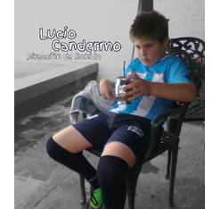

Miercoles 24 de Junio de 2001
![Texto estilizado que dice la palabra ORION con un diseño minimalista y líneas finas.
Descripción generada con IA]()
42
Sonido
Lucio Candermo
Mi motivación personal para realizar este cortometraje nace de una experiencia personal, ya que de chico sufrí bullying y se que muchas veces quienes lo viven se quedan en silencio, como yo que me quede callado. A través de esta historia, en base al sonido que es muy importante ya que quiero que el espectador no solo observe la historia situada en el
El tratamiento sonoro de nuestro cortometraje “Bajo este tremen-do Sol” buscará construir una experiencia inmersiva donde la música y el sonido no solo acom-pañan la imagen, sino que fun-cionen como una extensión del estado emocional de los persona-
El objetivo es generar incomo-didad sostenida, sin necesidad de mostrar violencia explícita constantemente. Tener empatía con Ignacio, a través de su per-
La música no será constante, sino estratégica, la vamos a separar en tres funciones:
Construcción de atmósfera:
En las primeras escenas, la música será sutil, con patrones repetitivos y minimalistas, donde buscamos transmitir calor, rutina y agobio social. Se priorizarán texturas antes que melodías cla-ras, generando una sensación de
Motivación
Tratamiento Sonoro
El rol de la banda sonora
Por Lucio Candermo
Impacto en el espectador
Banda sonora

2001, sino que la experimente desde adentro, es decir ponerse en la piel del personaje. Visibilizar esa realidad y generar concien-cia sobre las consecuencias que puede tener o incluso llegando a situaciones trágicas. Mi intención es que el espectador reflexione y entienda la importancia de hablar y no naturalizar la violencia.
jes y del contexto social en el que están transitando (Diciembre del año 2001), dondé la Argentina explota, ellos también. Todo esto acompañado con el sonido am-biental de esa época con todo el caos, violencia, descontrol que se generó por el corralito, nutriendo
con Foleys, Diálogos, y música que tiene que ver con la época con un carácter narrativo, repeti-tiva y progresiva, que aporte con-tinuidad al relato y genere una sensación de destino inevitable.
cepción sonora del mundo. Y por último una sensación inevitable, donde todo parece dirigirse al mismo desenlace.
incomodidad en el espectador.
Refuerzo emocional interno:
A medida que avanza el conflicto entre Ignacio y Nicolás, la mú-sica va a empezar a involucrarse más directamente con la perspec-tiva de Ignacio, dónde vamos a tener Capas sonoras que crecen lentamente, Pulsos rítmicos que imitan como una tensión interna, Uso de silencios abruptos para
generar incomodidad.
La idea es que el espectador no solo vea la violencia, sino que la “sienta” antes de que ocurra.
Clímax y ruptura:
En la secuencia del 20 de diciem-bre de 2001, el diseño sonoro será más intenso y caótico, vamos a tener superposición de sonidos diegéticos (cacerolazos, gritos, sirenas, entre otros).